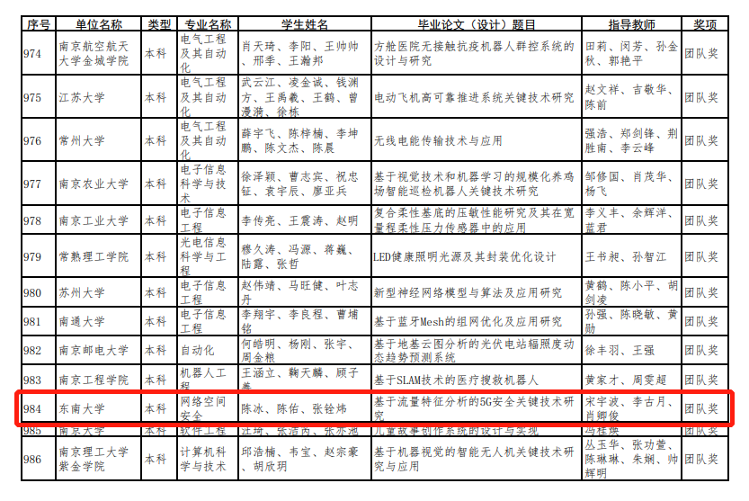

基于流量特征分析的5G安全关键技术研究
荣获奖项
2021年度江苏省普通高校本专科优秀毕业论文（设计）团队奖
流量特征分析
Massive MIMO
Internet自60年代出现以来发展迅猛,网络规模飞速膨胀,网络流量越来越大,网络信息对人们生活的影响也越来越深远,然而网络中P2P等应用正在大量的消耗网络的带宽资源,从而影响了关键业务的正常展开。因此.通过对网络中的各种业务流量进行分析建立合适的预测模型就成为网络发展的必要。通过分析.,能及时的发现网络中的异常,从而使得网络管理更主动,为网络的持续高性能运行提供主要的保障,为规划、设计网络提供科学依据。
第五代移动通信技术
5G作为一种新型移动通信网络，不仅要解决人与人通信，为用户提供增强现实、虚拟现实、超高清(3D)视频等更加身临其境的极致业务体验，更要解决人与物、物与物通信问题，满足移动医疗、车联网、智能家居、工业控制、环境监测等物联网应用需求。最终，5G将渗透到经济社会的各行业各领域，成为支撑经济社会数字化、网络化、智能化转型的关键新型基础设施。